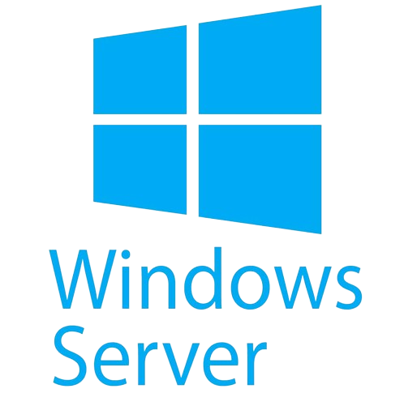

Projets Personnels

Voici mon projet personnel qui consiste à créer une application pour avoir le flux RSS d'un jeu vidéo pour avoir toutes les actualités.

Projet en cours sur la création de deux serveurs (un serveur web et un serveur de jeu vidéo).